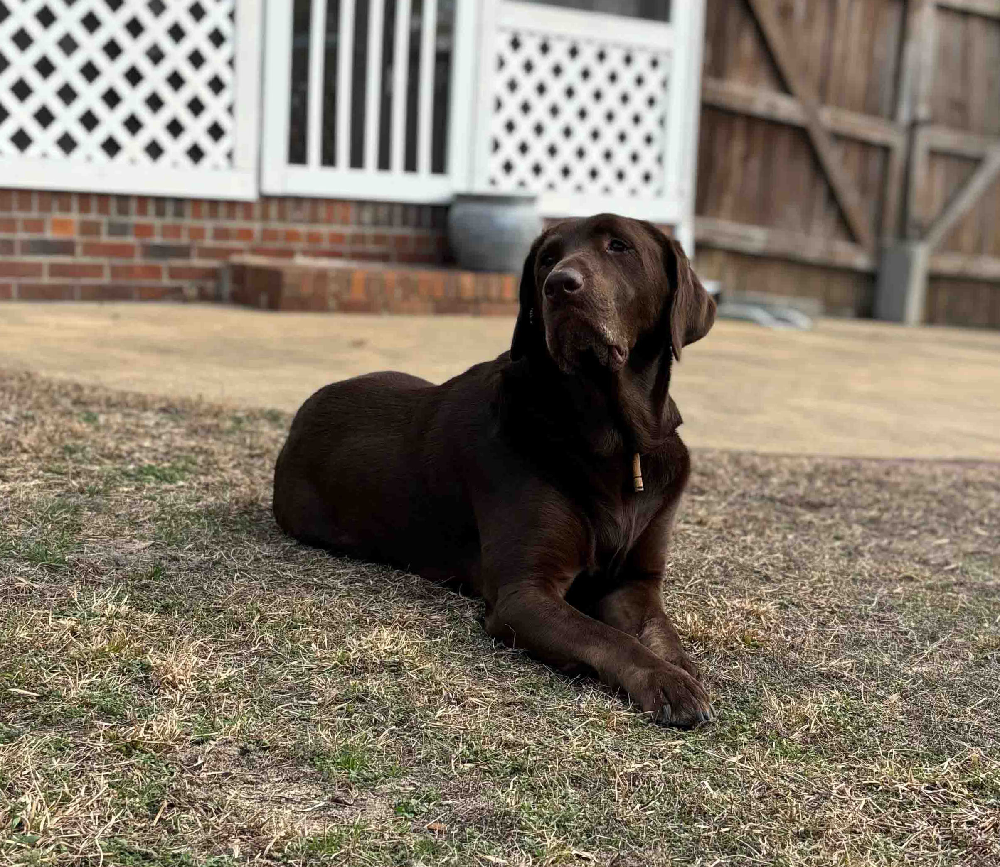

Hi! My name is Astro
Astro was born on May 14, 2018, He is almost 7 years old. He likes to play with balls and run a lot! He is characterized by being very happy, he always jumps up when it is time to eat. He is very calm and gets along well with dogs and children.
ADOPT ME NOW